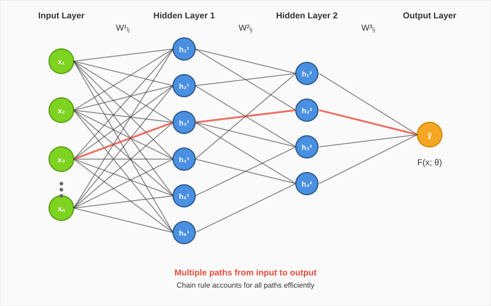
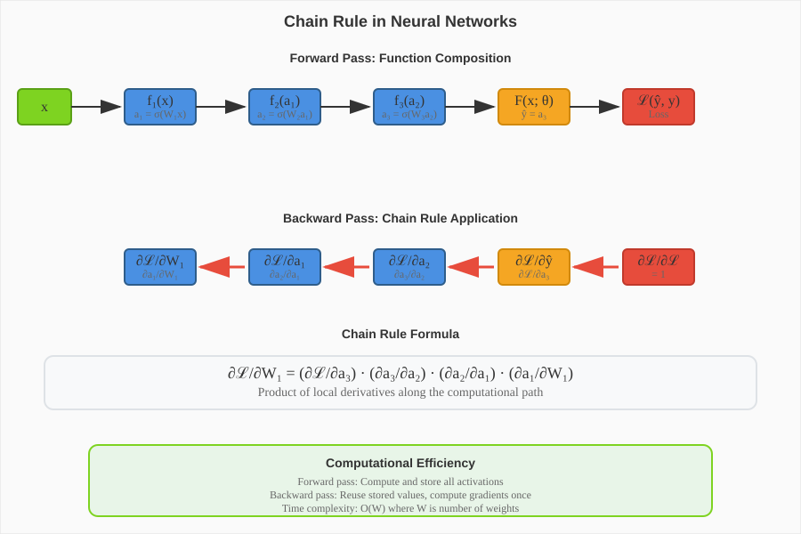
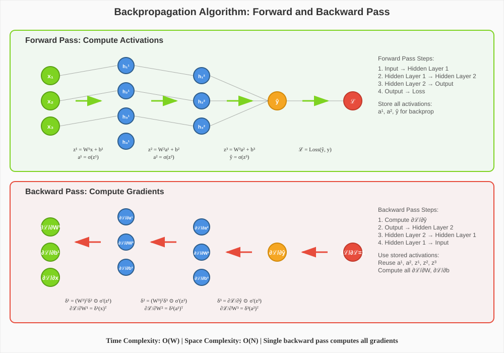
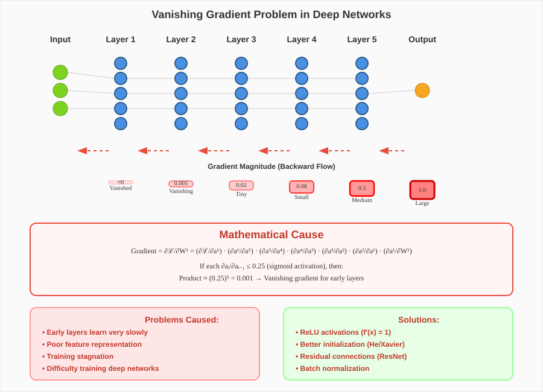
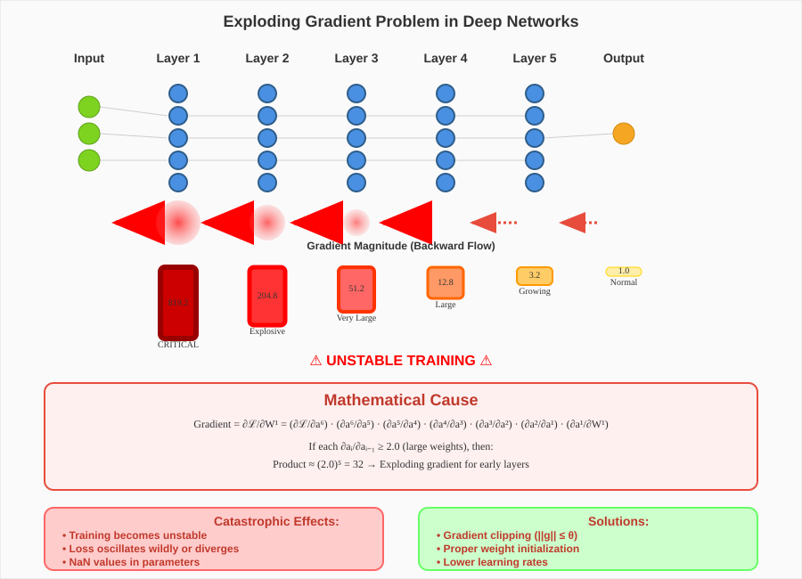

Chain Rule and Backpropagation in Deep Neural Networks
📋 Quick Navigation
- Introduction to Multi-Layer Networks
- The Chain Rule in Deep Networks
- Backpropagation Algorithm
- Gradient Flow Problems
- Vanishing Gradient Problem
- Exploding Gradient Problem
- Weight Initialization Strategies
- Mathematical Formulation
- Implementation Considerations
- References & Further Reading
🧠 Introduction to Multi-Layer Networks
In deep neural networks with multiple hidden layers, the relationship between input features and final outputs becomes significantly more complex than in single-layer perceptrons. Each weight parameter influences the output through multiple computational paths, creating an intricate web of dependencies that requires careful mathematical treatment.

The fundamental challenge lies in computing how changes to early layer parameters affect the final loss function. Unlike shallow networks where the derivative computation is straightforward, deep networks require us to trace the influence of each parameter through all subsequent layers.
Key Characteristics of Deep Networks
Multiple Paths to Output: Each weight in earlier layers affects the final output through exponentially many paths as we go deeper. However, the chain rule allows us to compute these derivatives efficiently without explicitly enumerating all paths.
Compositional Structure: Deep networks represent nested function compositions:
where \(f_i\) represents the transformation at layer \(i\) with parameters \(\theta_i\).
Gradient Propagation: The derivative of the loss with respect to parameters in layer \(\ell\) depends on all layers from \(\ell\) to \(L\).
⛓️ The Chain Rule in Deep Networks
The chain rule of calculus provides the mathematical foundation for training deep neural networks. When we have a composition of functions, the derivative of the outer function with respect to the inner variable is the product of derivatives along the chain.

Mathematical Foundation
For a loss function \(\mathcal{L}\) that depends on the network output \(F(x; \theta)\), the gradient with respect to parameters in layer \(\ell\) is:
where \(a_i\) represents the activation of layer \(i\).
Efficiency Through Memoization
The key insight is that many of these partial derivatives are reused across different parameter gradients. By computing and storing (memoizing) intermediate results, we can avoid redundant calculations and achieve linear time complexity in the number of parameters.
Forward Pass: Compute and store all activations from input to output.
Backward Pass: Compute gradients from output to input, reusing previously computed derivatives.
🔄 Backpropagation Algorithm
Backpropagation is the practical application of the chain rule for training neural networks. It consists of two phases that efficiently compute gradients for all parameters in the network.

Forward Pass Algorithm
- Input Processing: Start with input \(x\) and initialize first layer activations
- Layer-by-Layer Computation: For each layer \(\ell = 1, ..., L\):
- Compute pre-activation: \(z_\ell = W_\ell a_{\ell-1} + b_\ell\)
- Apply activation function: \(a_\ell = \sigma(z_\ell)\)
-
Store both \(z_\ell\) and \(a_\ell\) for backpropagation
-
Loss Computation: Calculate loss \(\mathcal{L}(a_L, y)\) using final activations and true labels
Backward Pass Algorithm
-
Output Layer Gradient: Compute \(\frac{\partial \mathcal{L}}{\partial a_L}\)
-
Layer-by-Layer Backpropagation: For each layer \(\ell = L, L-1, ..., 1\):
- Compute error term: \(\delta_\ell = \frac{\partial \mathcal{L}}{\partial z_\ell}\)
- Calculate weight gradients: \(\frac{\partial \mathcal{L}}{\partial W_\ell} = \delta_\ell a_{\ell-1}^T\)
- Calculate bias gradients: \(\frac{\partial \mathcal{L}}{\partial b_\ell} = \delta_\ell\)
-
Propagate error: \(\delta_{\ell-1} = W_\ell^T \delta_\ell \odot \sigma'(z_{\ell-1})\)
-
Parameter Update: Use computed gradients to update all network parameters
Computational Complexity
Time Complexity: \(O(W)\) where \(W\) is the total number of weights Space Complexity: \(O(N)\) where \(N\) is the total number of neurons
The algorithm scales linearly with network size, making it feasible for very large networks.
🌊 Gradient Flow Problems
As neural networks become deeper, the gradients computed during backpropagation can suffer from two critical problems that severely impact training effectiveness. These problems arise from the multiplicative nature of the chain rule.
The Multiplicative Chain Effect
During backpropagation, gradients are computed as products of derivatives across layers:
The behavior of this product critically depends on the magnitude of individual terms \(\frac{\partial a_i}{\partial a_{i-1}}\).
Impact on Learning
Early Layer Updates: Layers closer to the input receive gradients that have passed through all subsequent layers, making them most susceptible to gradient flow problems.
Training Instability: Extreme gradient values lead to either negligible updates (vanishing) or unstable oscillations (exploding).
Convergence Issues: Both problems can prevent the network from finding optimal solutions or cause training to fail entirely.
📉 Vanishing Gradient Problem
The vanishing gradient problem occurs when gradients become exponentially smaller as they propagate backward through the network layers. This results in extremely slow or completely stalled learning in early layers.

Mathematical Cause
When the derivatives \(\frac{\partial a_i}{\partial a_{i-1}}\) are consistently less than 1 (typically between 0 and 0.25 for sigmoid activations), their product approaches zero exponentially:
Common Causes
Saturating Activation Functions: - Sigmoid: \(\sigma'(z) \leq 0.25\) - Tanh: \(\text{tanh}'(z) \leq 1\)
Small Weight Initialization: When weights are initialized too small, the derivatives of the linear transformations become small.
Deep Network Architecture: The problem becomes more severe as network depth increases.
Symptoms
- Slow Early Layer Learning: Parameters in initial layers update very slowly
- Representation Bottleneck: Early layers fail to learn meaningful features
- Training Plateau: Loss decreases very slowly or stops decreasing entirely
Solutions
Modern Activation Functions: - ReLU: \(f(x) = \max(0, x)\) with \(f'(x) = 1\) for \(x > 0\) - Leaky ReLU: Prevents complete saturation - ELU, Swish, GELU: Advanced alternatives
Better Initialization: Xavier/Glorot and He initialization schemes
Architecture Improvements: - Residual connections (ResNet) - Dense connections (DenseNet) - Batch normalization
📈 Exploding Gradient Problem
The exploding gradient problem is the opposite of vanishing gradients, where gradients become exponentially larger as they propagate backward, causing unstable training dynamics.

Mathematical Cause
When derivatives \(\frac{\partial a_i}{\partial a_{i-1}}\) are consistently greater than 1, their product grows exponentially:
Common Causes
Large Weight Initialization: When weights are initialized too large, derivatives of linear transformations become large.
Inappropriate Learning Rates: High learning rates amplify the exploding gradient effect.
Deep Networks: More susceptible as network depth increases.
Symptoms
- Erratic Training: Loss oscillates wildly and may increase suddenly
- NaN Values: Extremely large gradients can cause numerical overflow
- Divergent Training: Model parameters grow unbounded
- Unstable Convergence: Training fails to reach optimal solutions
Solutions
Gradient Clipping:
where \(\theta\) is the clipping threshold.
Proper Weight Initialization: Careful initialization schemes to keep gradients in reasonable ranges.
Learning Rate Scheduling: Adaptive learning rates that adjust based on gradient magnitudes.
Batch Normalization: Normalizes inputs to each layer, stabilizing gradient flow.
⚖️ Weight Initialization Strategies
Proper weight initialization is crucial for preventing both vanishing and exploding gradient problems. The goal is to maintain gradient magnitudes in a reasonable range throughout training.
Zero Initialization Problem
Initializing all weights to zero causes all neurons in a layer to compute identical outputs and receive identical gradients, preventing the network from breaking symmetry and learning diverse features.
Random Initialization Principles
Variance Preservation: Maintain similar variance of activations and gradients across layers.
Xavier/Glorot Initialization: For layers with \(n_{\text{in}}\) inputs and \(n_{\text{out}}\) outputs:
He Initialization: Designed for ReLU activations:
Activation-Specific Initialization
| Activation | Recommended Initialization | Variance |
|---|---|---|
| Sigmoid/Tanh | Xavier/Glorot | \(\frac{1}{n_{\text{in}}}\) |
| ReLU | He | \(\frac{2}{n_{\text{in}}}\) |
| Leaky ReLU | He (modified) | \(\frac{2}{(1 + \text{slope}^2) \cdot n_{\text{in}}}\) |
| Linear | Xavier | \(\frac{1}{n_{\text{in}}}\) |
Advanced Initialization Techniques
LSUV (Layer-Sequential Unit-Variance): Initialize layer by layer, ensuring unit variance.
Orthogonal Initialization: Initialize weight matrices to be orthogonal, preserving gradient norms.
Data-Dependent Initialization: Use statistics from a forward pass with real data to determine initialization.
📐 Mathematical Formulation
Complete Gradient Computation
For a neural network with \(L\) layers, the gradient of the loss \(\mathcal{L}\) with respect to weights \(W^{(\ell)}\) in layer \(\ell\) is:
where the error term \(\frac{\partial \mathcal{L}}{\partial z^{(\ell)}}\) can be computed recursively:
Layer-Specific Gradients
Weight Gradients:
Bias Gradients:
Activation Gradients:
Gradient Flow Analysis
The gradient magnitude for layer \(\ell\) can be bounded by:
This bound illustrates how the product of weight norms and activation derivatives determines gradient flow behavior.
💻 Implementation Considerations
Computational Efficiency
Memory Management: Store activations during forward pass for gradient computation, but consider memory-time tradeoffs for very deep networks.
Numerical Stability: Use numerically stable implementations of activation functions and their derivatives.
Vectorization: Implement matrix operations efficiently using optimized linear algebra libraries.
Monitoring Training
Gradient Norms: Track gradient magnitudes across layers to detect vanishing/exploding problems:
def monitor_gradients(model):
gradient_norms = []
for name, param in model.named_parameters():
if param.grad is not None:
grad_norm = param.grad.data.norm(2).item()
gradient_norms.append((name, grad_norm))
return gradient_norms
Activation Statistics: Monitor activation distributions and gradients during training.
Loss Landscapes: Visualize loss surfaces to understand optimization challenges.
Best Practices
- Start Simple: Begin with proven architectures and initialization schemes
- Monitor Early: Watch for gradient flow problems from the first few iterations
- Gradual Scaling: Increase network depth gradually while monitoring performance
- Regular Checkpointing: Save model states to recover from training instabilities
- Hyperparameter Sensitivity: Test robustness to different initialization and learning rate choices
📚 References & Further Reading
Foundational Papers
-
Rumelhart, D. E., Hinton, G. E., & Williams, R. J. (1986)
"Learning representations by back-propagating errors"
Nature, 323(6088), 533-536
🔗 DOI: 10.1038/323533a0 -
Bengio, Y., Simard, P., & Frasconi, P. (1994)
"Learning long-term dependencies with gradient descent is difficult"
IEEE Transactions on Neural Networks, 5(2), 157-166
🔗 DOI: 10.1109/72.279181 -
Glorot, X., & Bengio, Y. (2010)
"Understanding the difficulty of training deep feedforward neural networks"
AISTATS 2010
📄 ArXiv: 1502.01852
Modern Solutions
-
He, K., Zhang, X., Ren, S., & Sun, J. (2015)
"Delving deep into rectifiers: Surpassing human-level performance on ImageNet classification"
ICCV 2015
📄 ArXiv: 1502.01852 -
Ioffe, S., & Szegedy, C. (2015)
"Batch normalization: Accelerating deep network training by reducing internal covariate shift"
ICML 2015
📄 ArXiv: 1502.03167 -
He, K., Zhang, X., Ren, S., & Sun, J. (2016)
"Deep residual learning for image recognition"
CVPR 2016
📄 ArXiv: 1512.03385
Implementation Resources
-
Goodfellow, I., Bengio, Y., & Courville, A. (2016)
"Deep Learning"
MIT Press - Chapter 6: Deep Feedforward Networks
🔗 Online Book -
Nielsen, M. (2015)
"Neural Networks and Deep Learning"
Online Book - Chapter 2: How the backpropagation algorithm works
🔗 Online Resource
🚀 Interactive Resources

Hugging Face Models: Explore pre-trained networks demonstrating these concepts - 🤗 BERT Base - 🤗 ResNet-50
This documentation provides a comprehensive overview of the chain rule and backpropagation in deep neural networks. For questions or contributions, please refer to the project repository.